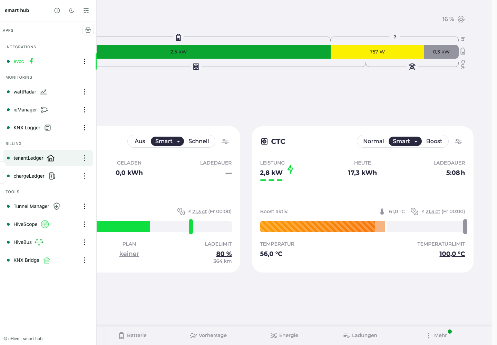

Was hat sich für dich verändert? Nichts.
Du öffnest deinen eHive, schaust auf deine Energieflüsse und nutzt deine Apps wie gewohnt. Du musst keine neue Bedienlogik lernen und dich nicht durch zusätzliche Menüs arbeiten. Es wirkt einfach alles etwas aufgeräumter und intuitiver. Genau so war es gedacht.
Ein UI, das man nicht benötigt, ist noch das beste UI.
Eine gute Oberfläche drängt sich nicht in den Vordergrund. Sie hilft dir, wenn du sie brauchst, und lässt dein Energiemanagement ansonsten seine Arbeit machen. Deshalb haben wir beim neuen SmartHub vor allem an den Details gearbeitet – und unter der Oberfläche viel weiterentwickelt.


Schicker: ein stimmiges Gesamtbild
Klarere Flächen, abgestimmte Farben und ein einheitliches Erscheinungsbild: SmartHub und die eHive-Apps passen noch besser zusammen. Ob hell oder dunkel – du wählst die Ansicht, die dir gefällt, und findest dich überall gleich zurecht.

Schneller: direkt ans Ziel
Apps öffnen, einen Blick auf die Energieflüsse werfen oder eine Einstellung ändern: Das soll sich flüssig und selbstverständlich anfühlen. Dafür haben wir den SmartHub im Hintergrund überarbeitet. Du nutzt ihn einfach wie gewohnt.
Sicherer: ein gutes Gefühl im Alltag
Wir haben den Schutz wichtiger Einstellungen und den Ablauf von Updates verbessert. Damit dein eHive gut geschützt bleibt, während du dich um deinen Alltag kümmerst.
Die lokale Arbeitsweise bleibt erhalten: eHive One steuert und verarbeitet deine lokalen Daten bei dir. Ob du Fernzugriff nutzt, entscheidest du selbst. Mehr dazu findest du im Beitrag Deine Daten bleiben bei dir.
Kleine Details, die im Alltag helfen
- Alles im Blick: Mit einem Klick siehst du, wie es deinem eHive geht und wie viel Platz noch frei ist.
- USB-Stick sicher entfernen: Die passende Funktion findest du direkt beim angezeigten Speicher.
- Sicherungen besser verwalten: Dein eHive behält den verfügbaren Platz im Blick und schützt geprüfte Sicherungen für die Wiederherstellung.
- Einfacher starten: Die geführte Einrichtung hilft Schritt für Schritt und lässt sich später fortsetzen.
- Raum für deine Ideen: Wer mehr automatisieren möchte, kann auf passend ausgestatteten und freigeschalteten Geräten Node-RED und ioBroker als Beta nutzen. Die Voraussetzungen findest du in den Beiträgen zu Node-RED und ioBroker.

Auf echten eHive-Geräten geprüft
Wir haben das Update auf echten eHive-Geräten im Alltag geprüft: vom Wechsel zwischen den Apps bis zur Aktualisierung. Damit die Verbesserungen dort ankommen, wo sie zählen – bei dir.
Vertraut bleiben. Besser werden.
Schicker, schneller und sicherer – das war unser Ziel. Du sollst davon profitieren, ohne dich mit der Technik dahinter beschäftigen zu müssen. Der neue SmartHub bleibt dein vertrauter Einstieg in eHive One. Nur mit mehr Feinschliff und einer stärkeren Basis.
Der neue SmartHub ist als Update verfügbar. Du findest ihn über die Update-Funktion deines eHive.